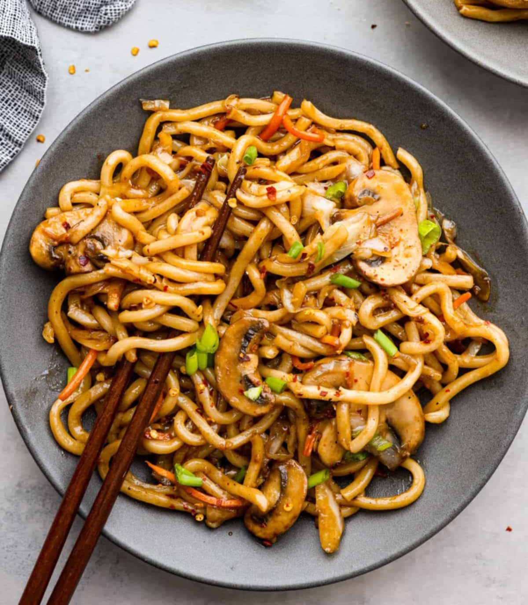

Pancit: A Filipino Noodle Dish
Pancit is a beloved Filipino noodle dish that comes in a variety of a forms, each with its own unique flavor profile and ingredients. The word "pancit" originates from the Hokkien word "pian it", meaning "noodles." This dish is a testament to the influence of Chinese cuisine in Philippine culinary fistory, various noodle types and cooking techniques being adapted ang integrated into Filipino cooking
Pancit is Incredibly versatile. It can be prepared with a wide range of ingredients, including meat, seafood, vegetables, and sauces. Some popular variations include
- Pancit bihon: Thin rice noodles cooked with vegetables and a savory sauce.
- Pancit canton: Flat, egg noodles cooked stir-fried with meat, vegetables, and a flavorful sauce.
- Pancit miki: Thick rice noodles served in a rich , savory broth.
- Pancit palabok: Thick rice noodles topped with a rich shrimp-based sauce, vegetables, and boiled egg.
Pancit is a staple in Filipino cuisine, often served during celebrations, special ocassions, and even everyday meals. Its adaptable nature allows for diverse flavors and combinatios, making it a beloved dish across generations.
Pancit Recipe
View Pancit Recipe
- 1 tablespoon vegetable oil
- 1/2 cup sliced pork or chicken
- 1/2 cup sliced onion
- 1/2 cup sliced green bell pepper
- 1/2 cup sliced cabbage
- 1/4 cup soy sauce
- 1 tablespoon oyster sauce
- 1 teaspoon sugar
- 1 teaspoon sesame oil
- 1/4 teaspoon ground black pepper
- 1/4 chopped garlic chives (optional)
- 1/4 cup chopped green onions, for garnish
- Calamansi juice or lemon juice, for serving (optional)
Instruction:
Cook the pancit noodles according to package directions. Drain and set aside.
- Heat the vegetable oil in large skillet or work over medium-high heat. Add the pork or chicken and cook until browned. Add the onion, green pepper, and cabbage and cook until softened, about 5 minutes.
- In a small bowl, whisk together the soy sauce, oyster sauce, sugar, sesame oil, and black pepper.
- Pour the sauce mixture into a skillet and bring to a simmer. Add the cooked noodles and stir to coat.
- Cook for 2-3 minutes, or until the noodles are heated through. Stir in the garlic chives(if using)
- Garnish with chopped green onions and serve immediately. Add a squeeze of calamansi or lemon juice for extra tang (optional)